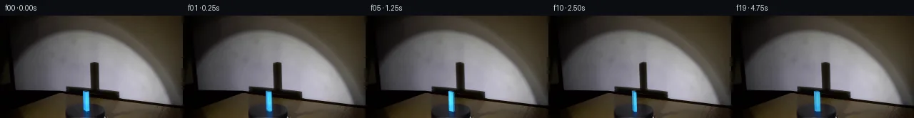

![首帧]()

Round 00
2026-11-05T04:08:00.346967+00:00像素候选变化代码 +290/−0inspection 更新
pixels 2202d103bd4c60f2 · code 1c4f0281a7577523
查看本轮 generate.py 真实 diff
--- previous/generate.py
+++ current/generate.py
@@ -0,0 +1,290 @@
+"""Deterministic local pixel continuation; no external renderer or model."""
+from pathlib import Path
+import json
+import math
+import cv2
+import numpy as np
+from PIL import Image, ImageDraw
+from scipy.ndimage import gaussian_filter
+import artifact_io
+
+ROOT = Path(__file__).resolve().parent
+SOURCE = np.asarray(Image.open(ROOT / 'first_frame.png').convert('RGB'))
+H, W = SOURCE.shape[:2]
+SS = 6
+Y, X = np.mgrid[:H, :W].astype(np.float32)
+
+# A small scene calibration in arbitrary world units (vertical units = pixels).
+HALF_X, HALF_Z, HEIGHT = 3.40, 2.00, 27.1
+CENTER = np.array([120.8, 133.9])
+LIGHT = np.array([-56.0, -100.0, -6.5]) # x, depth z, height
+WALL_Z = 60.0
+FOOT = np.array([[-HALF_X,-HALF_Z],[HALF_X,-HALF_Z],
+ [HALF_X,HALF_Z],[-HALF_X,HALF_Z]], dtype=np.float64)
+VIEW = np.array([-.35, -1.0])
+LIGHT_HORIZONTAL = LIGHT[:2] / np.linalg.norm(LIGHT[:2])
+NORMALS = np.array([[0.,-1.],[1.,0.],[0.,1.],[-1.,0.]])
+
+def rotation(angle):
+ # x goes toward negative depth: clockwise when seen from above.
+ a = math.radians(angle)
+ return np.array([[math.cos(a), math.sin(a)],[-math.sin(a), math.cos(a)]])
+
+def camera(xz, height=0.):
+ xz = np.asarray(xz)
+ return np.stack([CENTER[0]+xz[...,0]-.35*xz[...,1]-.0277*height,
+ CENTER[1]+.035*xz[...,0]-.35*xz[...,1]-height], axis=-1)
+
+def shadow_camera(xz, height):
+ k=(WALL_Z-LIGHT[1])/(xz[:,1]-LIGHT[1])
+ wall_x=LIGHT[0]+k*(xz[:,0]-LIGHT[0])
+ wall_y=LIGHT[2]+k*(height-LIGHT[2])
+ return np.stack([CENTER[0]+wall_x-.35*WALL_Z-.0277*wall_y-.50,
+ CENTER[1]+.035*wall_x-.35*WALL_Z-wall_y-1.30],axis=-1)
+
+def shadow_quad(angle):
+ xz=FOOT @ rotation(angle).T
+ top=shadow_camera(xz,HEIGHT); bottom=shadow_camera(xz,0.)
+ return np.array([top[np.argmin(top[:,0])],top[np.argmax(top[:,0])],
+ bottom[np.argmax(bottom[:,0])],bottom[np.argmin(bottom[:,0])]],np.float32)
+
+# Recover a small strip of wall beneath the moving vertical shadow by horizontal
+# interpolation, leaving the soft spotlight and large platform shadow fixed.
+background=SOURCE.astype(np.float32).copy()
+wall_clean=background.copy()
+for y in range(63,106):
+ # At the join, these endpoints retain the large horizontal support shadow.
+ left=SOURCE[y,124].astype(float); right=SOURCE[y,142].astype(float)
+ for x in range(124,143):
+ f=(x-124)/18
+ wall_clean[y,x]=left*(1-f)+right*f
+# A photographed shadow is transported as a negative, premultiplied layer.
+shadow_delta=np.zeros_like(background)
+for y in range(63,106):
+ fade=1. if y<101 else max(0.,(106-y)/5.)
+ for x in range(124,143):
+ d=SOURCE[y,x].astype(float)-wall_clean[y,x]
+ if np.mean(d)<-3:
+ shadow_delta[y,x]=np.minimum(d,0)*fade
+background-=shadow_delta
+
+# Remove the original blue block/reflection in a tight strip, retaining the
+# photographed table and disk outside that strip. The transition is keyed to
+# blue excess over the locally interpolated underlying scene.
+object_delta=np.zeros_like(background)
+old_blue_mask=np.zeros((H,W),np.float32)
+for y in range(104,H):
+ left=background[y,114].copy();right=background[y,129].copy()
+ for x in range(115,129):
+ f=(x-114)/15
+ clean=left*(1-f)+right*f
+ p=background[y,x]
+ excess=(p[2]-p[0])-(clean[2]-clean[0])
+ if excess>3 and p[2]>p[0]+10:
+ # Pixels on the block silhouette and its softened reflection.
+ object_delta[y,x]=p-clean
+ background[y,x]=clean
+ old_blue_mask[y,x]=1.
… diff truncated; 203 more lines …